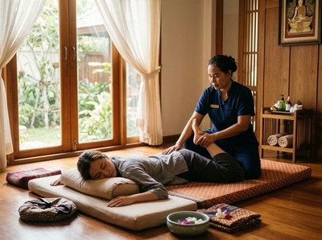

If bending down to tie your shoes takes effort, turning your head to reverse the car feels stiff, or you finish every working day with joints that feel locked and muscles that ache, reduced flexibility is likely at the root of it.
Thai massage targets the specific causes of limited movement, helping Glasgow residents move through their days with less effort and discomfort.
Flexibility, defined as the range of movement in a joint and the muscle length that allows it, is not fixed. It changes based on activity levels, age, posture habits, and injury history. When muscles shorten through long periods of stillness, the tissue around them adapts by tightening.

The most common causes are postures held for hours at a time — typically at a desk or behind a wheel — and muscle imbalances from sport or exercise. The natural loss of tissue elasticity that comes with age also plays a role. Scar tissue from old injuries can bind muscle fibres together, pulling joints out of alignment and cutting range of motion further.
Massage works on flexibility in several ways at once. Research published in PubMed shows that massage increases muscle compliance, leading to greater joint range of motion and less passive tissue stiffness. The pressure applied during a session lengthens muscle fibres, breaks down adhesions, and raises local tissue temperature — all of which allow the muscle to extend more freely.
Traditional Thai massage uses acupressure along sen energy lines combined with assisted stretching. The therapist guides each joint through its full range of motion, producing a deeper and more controlled stretch than most people can achieve alone. Sports massage targets specific areas of tightness with focused soft tissue work — a strong option for anyone dealing with localised restrictions from training or physical work. Thai oil massage uses sustained pressure and flowing strokes to soften tissue throughout the body, supporting broader mobility gains.
At Serendipity, on Hope Street in the heart of Glasgow city centre, sessions focused on improving flexibility begin with a short consultation. This helps identify where your movement feels most restricted and which daily activities are being affected. You can book your session online and arrive knowing your therapist will have a clear focus from the first minute.
For most clients, traditional Thai massage is the primary recommendation. The mix of acupressure and assisted stretching covers multiple joints and muscle groups in a single session. Your therapist will work through the body in a structured way, using techniques developed by head therapist Jariya Malone.
These techniques are applied with consistent pressure and timing to produce real, measurable change in how your body moves. Hot stone massage is sometimes used to warm deeper tissue before stretching work, allowing for greater release with less discomfort. Most clients notice clear improvements in their range of motion within four to six treatments.
Anyone whose movement has narrowed is a good candidate, but some groups tend to see the strongest results. Office workers who spend eight or more hours a day at a desk. Runners and cyclists whose training builds strength in one direction while tightening the surrounding tissue. Tradespeople whose work involves repeated motion or awkward positions. And adults over forty who are starting to notice the build-up of years of muscle shortening. If you want to get started with a flexibility-focused session, the team at Serendipity is ready to help.
Massage and stretching work in related but different ways. Stretching lengthens muscle fibres, but massage also breaks down adhesions, reduces tissue stiffness, and raises tissue temperature — things stretching alone cannot do. Research has shown that massage increases joint range of motion on its own. The two work well together as a combined approach.
Many clients feel a difference after a single session, especially in areas of significant tightness. Lasting improvements typically require four to six sessions, spaced one to two weeks apart. This gives the tissue time to settle between treatments. Your therapist at Serendipity will track progress and adjust the approach as needed.
Traditional Thai massage is generally more effective for flexibility. It uses assisted stretching as a core part of the technique, taking joints through their full range of motion with therapist guidance. Swedish massage focuses more on circulation and relaxation. That said, Thai oil massage combines the tissue-softening benefits of oil work with targeted pressure — a strong option for clients who want flexibility gains alongside deeper relaxation.
Yes, and this is one of the areas where massage therapy works especially well. Scar tissue from old injuries limits muscle fibre movement and can alter joint mechanics over time. Targeted soft tissue work breaks down these adhesions gradually, restoring elasticity to the area. Sports massage is particularly useful here, as it can be focused precisely on the restricted tissue while taking the original injury into account.
Some mild soreness in the hours after a session is common, especially if deep tissue work or assisted stretching was used on areas of significant restriction. It typically passes within 24 to 48 hours and is a normal response to tissue that has been mobilised. Drinking water and moving gently after your session supports recovery. Your therapist will always work within your comfort level and adjust pressure as needed.
Once a better range of motion has been established, a session every three to four weeks is enough for most people to hold the gains. Those with demanding jobs or active training programmes often benefit from fortnightly sessions. Your therapist at Serendipity can suggest a schedule based on your lifestyle and the areas being treated.